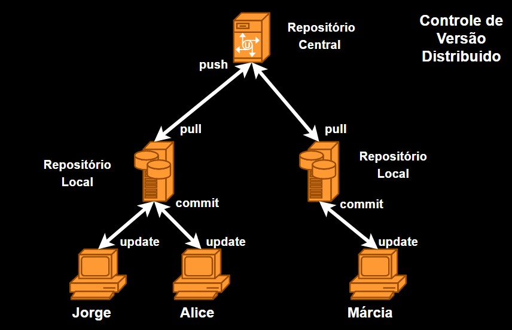

Gestão de Configuração
SCM - Git
Junho 2020
Frank de Alcantara
Software Configuration Management
O termo "Software Configuration Management (SCM)" Engloba um conceito de controle de modificações em projetos de software durante o desenvolvimento.
E na fase de manutenção durante toda vida útil do produto.
Em português: Gerência / Gestão de Configuração de Software (GCS).
Atividades Relacionadas
Identificar mudanças no código, processo de construção e testes.
Controlar a realização de alterações no código, processo de construção e testes.
Reportar todas as mudanças, alterações e correções de forma clara.
Maturidade: CMMI
Construção ou fornecimento de especificações para construir produtos de trabalho a partir do sistema de configuração.
Manutenção da integridade das baselines.
Fornecimento de dados precisos de status e configuração corrente aos stakeholders,
Baseline
A baseline (linha base) é definida pelo IEEE 610.12 (1990) como sendo:
“Uma especificação ou produto que foi formalmente revisada e acordada, que irá servir de base para o desenvolvimento e só pode ser mudada através de procedimentos formais de controle.”
Mudanças
Controlamos tudo que pode afetar a qualidade do produto:
especificação de projeto; modelo de dados; componentes; códigos-fonte; especificação de testes; projetos de testes.
Controle de Versão
Procedimentos para o gerenciamento de versões de artefatos de código, teste e configuração criados durante os processos de desenvolvimento e manutenção de um software.
Utiliza um sistema capaz de indicar, controlar e realizar alterações nestes artefatos independente do desenvolvedor.
Controle de Versão
Banco de dados para artefatos de desenvolvimento.
Controle de acesso e histórico de modificações.
Segurança, confiabilidade e disponibilidade.
GIT

Hoje, usamos o GIT muitas vezes no Github algumas vezes com o GitLab e com uma forte tendência do BitBucket
Repositório
Localização preferencialmente segura para armazenar todos os artefatos de projeto.
Edite seu arquivo localmente em uma working tree depois coloque seus arquivos em repositório usando o comando commit.
No GIT, cada usuário pode manter sua própria cópia do repositório.
Repositório
Você precisa adicionar os arquivos que estão na sua working tree ao repositório.
Não deve incluir arquivos .obj e .exe. Ou outros que sejam derivados do código.
Deve incluir arquivos Make ou de configuração.
Repositório
Podemos criar repositórios em qualquer lugar. Até no computador de desenvolvimento.
Coloque em computadores com RAID e que estejam disponívies 24h/7.
Considere: Github; GitLab; BitBucket
Além da Amazon, Microsoft e Google. Todos têm serviços de CI/CD.
Estrutura de Repositórios

Repositório Local
Working tree ou Directory tree. os arquivos não são controlados pelo GIT. podemos alterar qualquer coisa sem medo.
Staging Area estes são os arquivos que serão incluídos no seu próximo commit. Estes são os arquivos que o GIT conhece.
Repository estes são os arquivos que você já comitou. Está no diretório .git.
Staging Area
Contém uma cópia do seu último commit. Uma lista de arquivos e o hash SHA1 dos arquivos que fizeram parte do seu último commit.
Este índex é, na verdade, um arquivo binário no diretório .git.
Sempre que você altera, renomeia, ou apaga arquivos o SHA1 deste arquivo muda.
$ git ls-files -s
GIT na Linha de Comando
Para buscar ajuda:
$ git help verbo
$ git verbo --help
$ man git-verbo
Existe um Livro gratuito online que está em processo de tradução para o português.